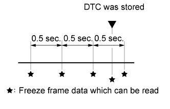

AUTOMATIC TRANSMISSION SYSTEM (for 1GR-FE) > DIAGNOSIS SYSTEM |
| DESCRIPTION |
When troubleshooting On-Board Diagnostic (OBD II) vehicles, the vehicle must be connected to the OBD II scan tool (complying with SAE J1987). Various data output from the vehicle ECM can then be read.
 |
OBD II regulations require that the vehicle on-board computer illuminate the Malfunction Indicator Lamp (MIL) on the instrument panel when the computer detects a malfunction in:
The emission control system/components
The powertrain control components (which affect vehicle emissions)
The computer
In addition, the applicable Diagnostic Trouble Codes (DTCs) prescribed by SAE J2012 are stored in the ECM memory.
When the malfunction does not reoccur, the MIL stays illuminated until the engine switch is turned off, and the MIL turns off when the engine is started. However, the DTCs remain stored in the ECM memory.
To check DTCs, connect the intelligent tester to the Data Link Connector 3 (DLC3) of the vehicle. The tester displays output DTCs, the freeze frame data and a variety of the engine data.
The DTCs and freeze frame data can be cleared with the tester (Click here).
| NORMAL MODE AND CHECK MODE |
The diagnosis system operates in "normal mode" during normal vehicle use. In normal mode, "2 trip detection logic" is used to ensure accurate detection of malfunctions. "Check mode" is also available to technicians as an option. In check mode, "1 trip detection logic" is used for simulating malfunction symptoms and increasing the system ability to detect malfunctions, including intermittent malfunctions.
| 2 TRIP DETECTION LOGIC |
When a malfunction is first detected, the malfunction is temporarily stored in the ECM memory (1st trip). If the same malfunction is detected during the next drive cycle, the MIL is illuminated (2nd trip).
| FREEZE FRAME DATA |
Freeze frame data records the engine conditions (fuel system, calculated load, engine coolant temperature, fuel trim, engine speed, vehicle speed, etc.) when a malfunction is detected. When troubleshooting, freeze frame data can help determine if the vehicle was moving or stationary, if the engine was warmed up or not, if the air-fuel ratio was lean or rich, and other data from the time the malfunction occurred.
 |
The ECM records freeze frame data in 5 different instances: 1) 3 times before the DTC is stored, 2) once when the DTC is stored, and 3) once after the DTC is stored. These data can be used to simulate the vehicle condition around the time when the malfunction occurred. The data may help find the cause of the malfunction, or judge if the DTC is being caused by a temporary malfunction or not.
| CHECK DATA LINK CONNECTOR 3 (DLC3) (Click here) |
| CHECK MIL |
Check that the MIL illuminates when turning the engine switch on (IG).
If the MIL does not illuminate, there is a problem in the MIL circuit (Click here).
When the engine is started, the MIL should turn off.